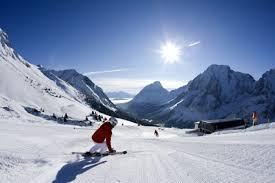

- 


In transition year we were given the oppurtunity to go on a skiing trip with our year. Knowing it would have been my first time skiing and the fact all my friends were keen to go I had no doubt I wanted to go. We spent one week in Austria trying to master the art of skiing. We started as beginners and the more our confidence grew the more we thought we were semi-pro! Nightime activities were also a blast as we went swimming, ice-skating and even attended some ski shows. A truly once in a lifetime xperience in which I am extremely grateful to have gotten the oppurtunity to go on.
Another transition year school trip. We were exciled up west to Mayo in an extremely cold, wet and grueling trip. Geared toward personal development and character building it came at a good time in fourht year just when life started to become easy! We took part in many military-like activities such as raft building, surfing, rock climbing, high-wire all while battling the gruesome conditions of winter on the wild atlantic way.
After the leaving cert we didwhat you would stereotypically do and book a holiday in the sun to cap off what was an amazing 6 years in secondary school. We decided upon Magaluf for the destination as everyone else seemed to gather there. Not much to this trip bar a bit of sun anf the occasional drink or two but an amazing trip and experience with lifelong friends.
I was too little to remember my first visit to the states to visit my American cousins. We went to New York and Boston when i was 3 years old. This June we plan to head stateside again on the same trip to our cousins and tour the Big Apple and have some relaxation time in Boston(assuming the corona virus doesn't interrupt). 5 nights in New York followed by 6 nights in Bosotn whilst being hosted by our cousins. I truly cannot wait for this trip and hope to catch up on everything I missed out on first time around.